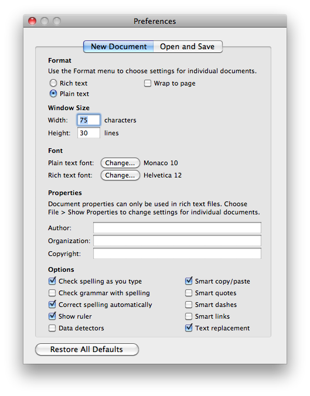
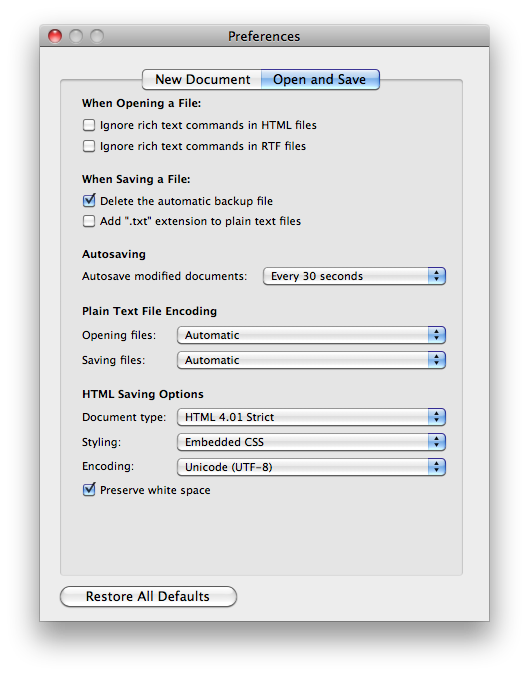

Contents
Editing text files
Whilst using FSL you are likely to need to use a text editor at some point, for example to create a fsl.sh settings file or an event EV file. There are lots of options open to you, here are some suggested editors.
Mac OS X
Mac OS X comes with an editor TextEdit (look in /Applications), by default it create Rich Text documents which FSL cannot use, so you need to change the settings so that it will create Plain Text files. Do this by opening the preferences window (TextEdit > Preferences) and in the New Document tab choose Plain Text from the Format section. Then in the Open and Save tab deselect Add ".txt" extension to plain text files. You can now close this window and open a new file with File > New`.
 Other options include the editors mentioned in the Linux section below, although you may have to download and install the editor.
Linux
The Gnome desktop ships with an editor called Gedit which is straightforward to use (there is a Mac OS X version available). To start it type:
gedit
at a terminal prompt (add an & if you wish to continue using this terminal). The default settings are fine for editing files for FSL.
More advanced users may want to look into Emacs.